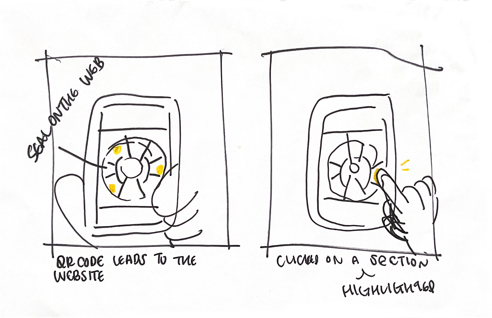

Kim, my partner for the user journey, told me the storyboard is straightforward, but at the same time, she was a little bit confused about how my project works. The project idea I have in mind is more of an information website, but during the user journey, I started to wonder if that's interesting or if that's something I really want to do. Overall, it was a great experience sharing my project idea and getting feedback from a peer. It definitely helped me rethink my project and guide me toward a better way.